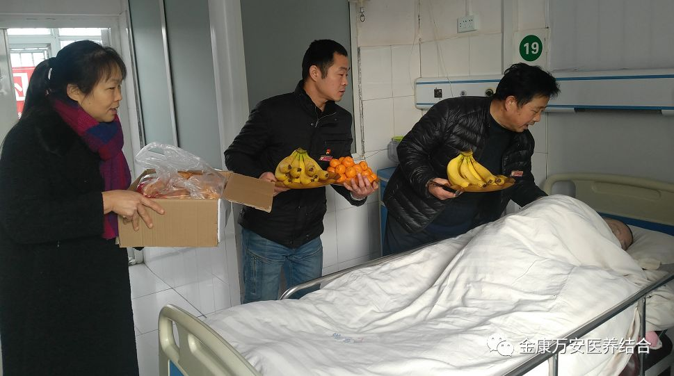
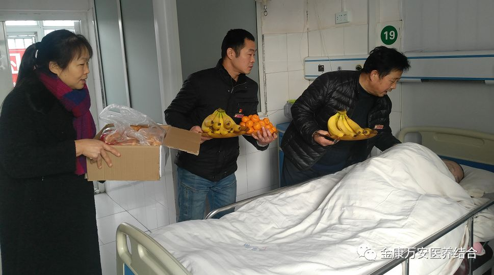

关爱老人，让爱传递
光阴似箭，日月如梭，时间过得如同流水一般，转眼之间，我们迎来了一年一度的元旦佳节。尊老、敬老是我们中华民族的传统美德，是先辈们传承下来的宝贵精神财富。为此，我院人员在王卫峰总经理的引导下，在“漯河金康护理院”和“万安老年公寓”为入住老人们举行了一系列活动。
发白如雪
那是岁月沧桑洒下的鲜花
弯躯是弓
那是时间老人积蓄的力量
岁月蹉跎
当他们不再青春
为他们献歌一曲
细细倾听他们过去的故事
 


老人是社会的财富，更是生活的宝典，让我们怀着一颗感恩的心，关心老人，关爱老人，让我们身边的老人幸福快乐的生活!


养老事业是一项造福社会、造福千万家庭的慈善事业，是为老人谋福、为社会担责的民生工程。本次活不仅给老人们带来了欢乐，更让他们感受到金康万安的关怀和温暖，受到了老人们的热烈欢迎和一致称赞。
漯河万安老年公寓是集保健康复、托老养老、居家养老、日间照料为一体的综合性医养结合机构。
建院以来一直秉承“孝、慈、仁、善”的企业文化理念，以“关爱今天的老人，就是关爱明天的自己”为服务理念，“以病人、老人为中心，以质量为核心，以服务为先导，以奉献为己任”为服务宗旨，让金康万安的服务更贴心、患者更舒心、家属更安心。
金康万安的新型养老服务模式已成为我省医养结合示范单位。先后获得了：河南省医养结合示范单位、河南省省级示范养老机构、河南省优秀社会组织、瀑河市民政局授予5A级社会组织、漯河市敬老模范社会服务窗口单位等多项荣誉称号。省、市、区领导多次莅临我院视察指导工作。
万安老年公寓设有多功能厅、康复保健室、娱乐室、健康讲堂、阅览室、棋牌室、空中花园等活动场所，一流的体检中心和餐饮服务。养老居室内设有中央空调、电视、适老化家具、内部电话、卫生间、沐浴、集中供氧等现代化医疗养老设施。目前设置养老床位260张。在总结多年医养结合经验的基础上，保证大众养老需求的同时，将推出更高层次、更优质的多种养老服务模式，以满足老人的不同需求。